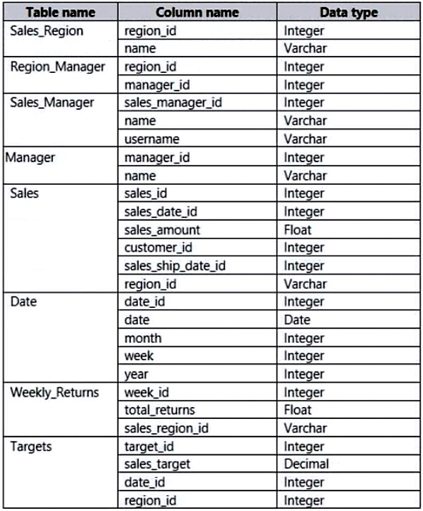

Topic 8 Question 5
Case Study -
This is a case study. Case studies are not timed separately. You can use as much exam time as you would like to complete each case. However, there may be additional case studies and sections on this exam. You must manage your time to ensure that you are able to complete all questions included on this exam in the time provided.
To answer the questions included in a case study, you will need to reference information that is provided in the case study. Case studies might contain exhibits and other resources that provide more information about the scenario that is described in the case study. Each question is independent of the other questions in this case study.
At the end of this case study, a review screen will appear. This screen allows you to review your answers and to make changes before you move to the next section of the exam. After you begin a new section, you cannot return to this section.
To start the case study -
To display the first question in this case study, click the Next button. Use the buttons in the left pane to explore the content of the case study before you answer the questions. Clicking these buttons displays information such as business requirements, existing environment and problem statements. If the case study has an
All Information tab, note that the information displayed is identical to the information displayed on the subsequent tabs. When you are ready to answer a question, click the Question button to return to the question.
Overview -
Litware, Inc. is an online retailer that uses Power BI.
Litware plans to leverage data from an Azure SQL database that stores data for the company's live e-commerce website.
Litware uses Azure Active Directory (Azure AD) to authenticate users.
Existing Environment. Sales Data
Litware has online sales data that has the SQL schema shown in the following table.

In the Date table, the date_id column has a format of yyyymmdd and the month column has a format of yyyymm.
The week column in the Date table and the week_id column in the Weekly_Returns table have a format of yyyyww.
In the Sales table, the sales_id column represents a unique transaction.
The region id column can be managed by only one sales manager.
Existing Environment. Data Concerns
You are concerned with the quality and completeness of the sales data. You must ensure that negative and missing sales_amount values do NOT contribute to the total sales amount calculation.
Existing Environment. Reporting Requirements
Litware identifies the following reporting requirements:
Executives require a visual that shows sales by region.
Executives require a visual that shows returns by region manager and the sales managers that report to them.
The sales managers must be able to see only the sales data of their respective region.
The sales managers require a visual to analyze sales performance versus sales targets.
The sales department requires reports that contain the number of sales transactions.
Users must be able to see the month in each report as shown in the following example: Feb 2020.
The customer service department requires a visual that can be filtered by both sales month and ship month independently.
The maximum allowed latency to include transactions in reports is five minutes.
Question:
What should you do to address the existing environment data concerns?
- a calculated column that uses the following formula: ABS(Sales[sales_amount])
- a measure that uses the following formula: SUMX(FILTER('Sales', 'Sales'[sales_amount] > 0)),[sales_amount])
- a measure that uses the following formula: SUM(Sales[sales_amount])
- a calculated column that uses the following formula: IF(ISBLANK(Sales[sales_amount]),0, (Sales[sales_amount]))